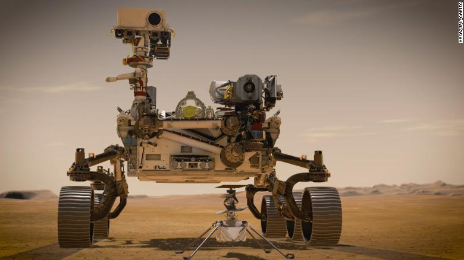

Members of the Perseverance Mars Rover team watch in mission control at NASA's Jet Propulsion Laboratory as the first images arrive moments after the spacecraft success fully touched down on Mars, Thursday, Feb. 18, 2021. A key objective for Perseverance’s mission on Mars is astrobiology, including the search for signs of ancient microbial life. The rover will characterize the planet’s geology and past climate, pave the way for human exploration of the Red Planet, and be the first mission to collect and cache Martian rock and regolith.
defender’s movement and depending on your body position, he goes one way or the other. So first I tried not to let him receive the ball. “When he received with his back to me, there would be a hard challenge and because he’s so strong, so resistant, because he doesn’t go down looking for fouls, the foul is not given away. “If he receives the ball facing you, one on one, it’s impossible because of that improvisation he has. You can’t plan for it, because he is watching you and can change. I would fake to make one challenge, one side, to try to make him go the other way, where I really wanted him. “There were games where I went too far in terms of aggression. I was sent off, but he never had a go at me for it; he never said anything. I think he liked it, I think he liked that kind of challenge. “In fact Barcelona called me [towards the end of his time at Atletico] so I think he must have liked my football. I’d like to know his opinion one day. My best games were always against Messi, for sure.” The bigger picture Questions are currently being asked of Messi and Hazard, with their futures f
Go to Home page
HOME